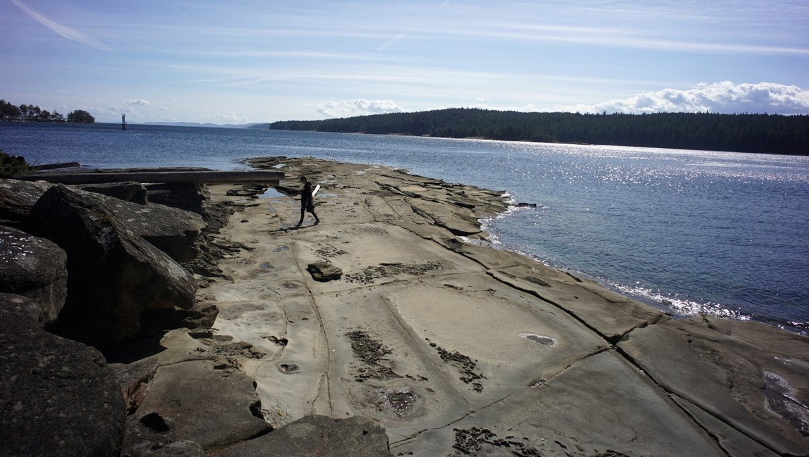

gabriola
Gabriola is a great stopover to sail the 17 nm to Point Grey across the Strait of Georgia to Vancouver. Leaving from this island gives a good angle to the prevailing winds in the area, wether they're coming out of the NW or SE.
Silva Bay: On the eastern end of the island. This bay is lovely, but it is filled with moorings. There is very little room to anchor, except maybe at the northern end of the bay, but that area is also more exposed. It's not possible to anchor near the marina docks or at the south end of the bay because of float plane activity.
We stayed at the Page's Resort docks for a few days in late September 2021, to wait for bad weather to pass. The Silva Bay Yacht Club also has dock space there at the very end of E dock, offering 1 day free moorage for Reciprocal Guests. The rates at Page's are cheaper past September 7th (winter rates). This gave us ample time to explore the island.
From the marina, Drumbeg Provincial Park is a short walk away, and it is a lovely, lovely place! The park has a long sand and pebble beach with sandstone and conglomerate rock formations, observable at low tide. On the way, there is a woodworking school with beautiful structures. We were looking for some medium for our dry toilet and were glad that they agreed to part with some wood shavings!
Like all islands in the area, the Page's Resort docks don't offer water on the docks. When we were there in September 2021, it wasn't possible to do laundry either. It was an especially dry year, and the August heatwave did not help.
The nearest grocery, Nester's Food Market, is an hour bike ride away, by way of the North road. The South road is longer, but offers a great view of False Narrows. There are a few difficult hills, but it's a nice ride overall. The road is busiest near the grocery, but safe to cycle through otherwise. There is also a BC liquor right next to the grocery, and a hardware store not too far across the street. It's also possible to get to town by waving down Gertie, the community bus.
Degnen Bay: On the south end of the island, west of Gabriola pass. Degnen Bay is also full of moorings. It is very unfortunate considering that this bay is a hurricane hole, perfect to weather storms, and transients now have to skip it. We went inside to see for ourselves (September 2021), and we found no room, except maybe one by the public dock, but mooring there would also mean blocking the path to vessels wishing to get on, or off the dock.
Because we couldn't use Degnen Bay to wait for slack tide at Gabriola pass we dropped anchor for 2 hours in Wake's Cove, just west of the pass on the northern end of Valdes Island. It is not ideal. There are structures that occupy most of the bay, and the area is highly affected by the currents from the pass. If waiting to enter from the other side, the anchorage off Kendrick Island is better, bigger, and well-sheltered.
Gabriola pass: Like all passes, it is best to time a passage at slack tide, but we've gone through with the tide a few times. We would never dare transit with the peak of the tide, or against it, but we have gone when the tide was running with us at 2 or 3 knots. Even if the current is in our favor, it is a stressful experience because the boat takes on a 45-degree angle as it moves through. The stress though is short-lived. The pass releases you almost immediately, and you can then resume a normal, straight path again.
One morning we went through only to find that there were 3 tugs hauling log booms on the other side. We maneuvered past them, careful not to stay in their way too long. We're glad we arrived there before they did.
We saw a lot of No Freighter Anchorages signs on the island.
On our return in August 2021, we too noticed the increase in ships anchored in Gulf Island waters. These boats are all destined for the Port of Vancouver, but use more than two dozen anchorages in and around the Southern Gulf Islands to wait for a berth to open in the port to pick up cargo such as grain, coal, potash or sulphur. The Port of Vancouver says growth in trade, supply chain issues and weather-related delays have resulted in the Southern Gulf Island anchorages being used more.
It's sad, because these anchorages are often located in sensitive marine ecosystems, and accidents happen a lot. "Between January 2015 and March 2020, there were 102 incidents of ships dragging anchors along B.C. 's coastline which can result in collisions, groundings or other emergencies."
This website tracks all boats currently anchored in the Gulf Islands.